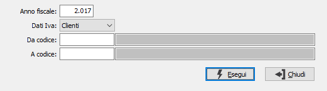

Stampa dati IVA clienti/fornitori
Il programma effettua la stampa di un report di controllo del fatturato di clienti o fornitori, che consente di eseguire un controllo incrociato fra i totali imponibili e Iva dei vari clienti e fornitore ed i totali imponibili e Iva delle varie aliquote. Scegliere Contabilità, Operazioni di fine esercizio, Stampa dati Iva clienti e fornitori. Appare la seguente maschera video:

ANNO: È l'anno di cui si intendono stampare i dati Iva.
DATI IVA: Valori ammessi: Clienti; Fornitori.
DA CODICE: Inserire il codice del cliente o del fornitore con cui si desidera iniziare la stampa dei dati. Confermando a vuoto, la stampa inizia dal primo valido.
A CODICE: Inserire il codice del cliente o del fornitore con cui si vuole terminare la stampa dei dati. Confermando a vuoto, la stampa finisce con l’ultimo valido.